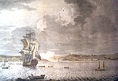
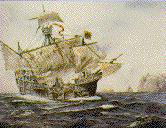

|


| |
|
|
| BEFORE LEAVING LA ROCHELLE |
| In the spring of 1647, shortly after
their wedding, Mathieu and Sébastienne get ready to emigrate to
New France, in conditions that do not promise to be
easy.
A distance of 1,200
leagues separates the port of La Rochelle from that of Quebec. A
sailing ship can cover it in about nine weeks. But everything depends on the wind: if it
fails during the voyage, there is nothing to do but wait for it to
pick up again, which can take a week or two, sometimes more.
And anything that makes the voyage longer also makes it more
dangerous.
A ship's captain would write in
1716: "I have been to Canada seven times and, although I came through
well, I dare say that the most favourable of those voyages gave me
more white hairs than all the ones I have made elsewhere."

The ship is tied up in the harbour
basin, all sails furled. It is a busy scene, with
lots of people coming and going, busy with the loading.
The other travellers arrive in La
Rochelle from Paris or other provinces, most of them on
foot, some by coach. Paris is 380 kilometres away, but people
did a lot of walking in those days. These travellers wait in inns
for the ship to sail. Sometimes young
engagés kick up such a merry racket that the authorities
lock them up in the Hôtel de Ville (town hall) until the last minute.
For ordinary people like Mathieu
and Sébastienne the fare is around 75 livres each
(more than a year's wages for an engagé), and for that price they
get only the bare minimum. They would do well to
bring provisions that are as non-perishable and
nourishing as possible.
|
|

|
| LET'S VISIT THE SHIP |
|
The ship is not very big: it is
about 37 to 50 metres long and 8 to 15 metres wide.
Generally there are between 100 and 300 passengers crammed into
the 'tween-decks for the whole voyage.
 THE HOLD
THE HOLD
Stones in securely fastened wicker
baskets: this is the ballast that keeps the ship steady in the
water. There are also barrels of gunpowder, well stowed, since every
vessel carried cannon to protect itself at sea. So
for long months, Mathieu and Sébastienne would be living on a
powder keg.
Above that is the capharnaüm (the jumble), that is,
the passengers' baggage and various goods to be delivered to the colony.
There are also the food stores. The maritime code required the captain to take on board
for each passenger 60 rations and 2/3 of a barrel of water (66 litres),
enough to live on for 60 days. On the menu: "ship's
biscuit", salt pork, peas, salted or dried cod,
herring, olive oil, butter, mustard, vinegar,
wine, brandy and candied fruit. If you wanted anything
else, you had to pack it in your baggage.
In all this, drink is
important. Since fresh water quickly goes bad, slimy
and full of tiny larvae, cider is taken on board, replaced on Sundays
by wine.
At any rate, Mathieu and Sébastienne
will have enough to eat and drink, provided the crossing does not take
more than two months. In 1662, one ship would take nearly four
months, and forty passengers would die of hunger and thirst.
The important thing in the hold is that nothing
moves: all the weight of the ballast, the powder barrels and the goods
must be evenly distributed, or else the ship capsizes and sinks like a stone. |
|
THE 'TWEEN-DECKS, OR "SAINTE-BARBE" |
| For the captain and dignitaries there
are a few cabins, but for the passengers there is only the 'tween-decks. No reserved places for them: the
luckiest sleep in hammocks, the rest on the floor.
The 'tween-decks is
cramped, not much higher than a metre sixty. So the passengers
cannot stand up straight and must stay bent over all the time.
Nor can they move about with a candle, because of
the risk of fire, and they are forced to stay in darkness. The space has almost no openings; the air is
foul and the stench abominable. At night the passengers sleep in the
cold and damp, at best in hammocks that follow the roll of the
waves, amid the rats and the groans of the sick.
A partition separates this dormitory
from another part of the 'tween-decks where the stable is, that is, the animals being
sent to the colony, some of which will end up on the table of the
captain and his guests. The smells and noises coming from the
animals are easy to imagine.
There is no dining
room. Ordinary passengers eat wherever they are when it is
mealtime. No heating either.
The single stove is reserved for cooking, and if the
ship is pitching too much, the food is eaten cold.
It is a jumble of people
and baggage; people literally walk over one another, and for
weeks on end.
The Jesuit Nau would write in
1734: "The mere sight of the Sainte-Barbe where we were to
sleep during the crossing dismayed us all [....]
We were packed into that dark and filthy place like
sardines in a barrel. We could not get to our
beds without banging our heads and legs twenty times.
Decency did not allow us to undress".
|
|
|
|

|
| THE PARTING SHOT |
| The passengers settle in as best they
can, then go back ashore for last-minute shopping, to say goodbye to
family, or to hear one last Mass.
When the wind is favourable, a drum roll
announces that the ship is about to leave the quay for the
roadstead, the first step before putting to sea. Some sails
are set, everyone goes back on board, and a cannon is fired: this is the
coup de partance (parting shot).
 The ship slowly leaves the harbour, and the
wind carries it out to the roadstead. The ship slowly leaves the harbour, and the
wind carries it out to the roadstead.
Mathieu and Sébastienne begin to see
the sea. But everything can come to a standstill there if the wind drops, and the
ship can stay like that, facing the town, for a day or two. Then,
when the wind returns, it heads for the open sea, passing close
to the Île de Ré. |
| THE DANGERS OF THE CROSSING |
| The passengers are confined to the Sainte-Barbe, and on stormy
days they cannot even go up on deck. They
constantly breathe the smells of this whole crowd, which hardly
ever washes or changes clothes, as well as the
smells of the stable next door. The floor of the 'tween-decks is
rarely cleaned. A Fille du Roi, in 1664, would complain of the
appalling conditions of a crossing of 87 long days, and
testify that the seawater washed the animals' excrement into
the 'tween-decks. In 1756, the Léopard would arrive full of
sick soldiers complaining that the 'tween-decks floor had been
cleaned only once in two months.
 The seawater is at 10 degrees Celsius, and it soaks everything, the
bunks, the food. A constant dampness chills
people to the bone. The ship creaks all over; the motion and the
noise never stop.
SICKNESS
Most of the passengers, not having their sea legs, suffer from
seasickness. But
other diseases also develop, such as scurvy,
smallpox, measles, dysentery and above all typhus, which was called
"ship fever or purple fever" . They are often
due to a lack of hygiene. Since fresh water is limited on board,
the passengers do not wash, and the close quarters in which they
live speed up the spread of disease. It is common for a
simple cold to turn into a real epidemic.
It must be said that the food does not help anyone recover.
People live off the
stores of salt pork and smoked fish while hoping for a
good catch. When there is no meat, they eat
porridges of wheat semolina, oats, peas or corn. They also bring
a good supply of hardtack, which they choke down after twenty or
thirty days even when it is riddled with worms. The fresh water, for its
part, is kept in large wooden barrels, but as the
crossing goes on it turns brownish and tiny larvae appear on
the surface. The passengers have to drink it, sometimes
holding their noses, it smells so bad. The longer the crossing
lasts, the more the water is rationed.
In these conditions deaths
are frequent. Historians estimate that at least 10% of
passengers die on each crossing, and often more. In
extreme cases there may barely be enough people left to sail the
ship. In 1732, of the 154 people on
board one ship, a good hundred
would die. The dead are wrapped in a
sheet and thrown into the sea with a cannonball tied to their feet.
STORMS
 Among
the grim tales the waves could tell, there are the storms.
Throughout the colony's history there are several cases of ships
hit by storms that drove them off course or ran them
aground. In such accidents, a ship can
be lost with all hands. The most famous example is that
of the Chameau which, off Louisbourg, just as everyone was
rejoicing over a good crossing, was caught in a storm: the ship
broke up on the shoals, 316 passengers died and a treasure of
300,000 livres was lost (divers would recover a small
part of it in 1970).
CAPTURE
Among the other perils of the sea, the
ship may be captured. In wartime, that goes
without saying, and many ships bound for New France were
captured by England, causing famine and shortages
in the colony, which was too
dependent on the mother country. But in peacetime, the
risk of capture also exists, since pirates and privateers are
around.
Privateers are honest
folk who hold a licence from the king to seize foreign ships: the
ship belongs to whoever takes it, with everything in it, but in that case you are
dealing with career military men who have good
manners. The pirate works without a licence, on his own
account, and knows no law. Either way, the passengers
are no better off: everything they own (trunks, linen,
jewellery, provisions) goes to the victor, who sells it all in some port or
throws overboard whatever he has no use for. The prisoners
are held for ransom and wait, most often in the West Indies,
for their families to raise the money.
These captures and shipwrecks ruin
travellers who carry a lot of goods with them, and are a
disaster for the colony, for which every shipment matters.
|
|
|
| THE REST OF THE VOYAGE |
| It seems that nothing too
unfortunate happened
during Mathieu and Sébastienne's crossing.
To relieve the boredom, the
sailors sometimes organize parties on deck. They play
music and the passengers join in the dancing. During the
day, they stroll on deck and chat; the
better educated read or write. The men take to games of
chance: cards, dice, chess or draughts.
But the greatest entertainment
of the crossing is undoubtedly the baptism held
on the Grand Banks, off Newfoundland. Most
passengers crossing the Atlantic for the first time have to
pay a small fee, or else they are thrown into a tub full of water.
When an iceberg is sighted, some set off in a longboat to meet it
and climb onto the ice to gather fresh water.
When the sea is calm, some go swimming in the open ocean,
for pleasure and not for their health, since the benefits of
sea bathing were not yet recognized. |
| AT LAST, THE GULF OF ST. LAWRENCE |
 At last, after an average of two months
on the high seas, the passengers sight the
coasts of the Gulf of St. Lawrence. But it is too soon to
celebrate: Quebec is still very far away, and it is on entering the
Gulf that the danger is perhaps greatest. It is very
dangerous to navigate: sudden squalls, very frequent
fog, countless reefs. Because of its rough waters, those
who were not seasick during the crossing almost always
are when they get there. At last, after an average of two months
on the high seas, the passengers sight the
coasts of the Gulf of St. Lawrence. But it is too soon to
celebrate: Quebec is still very far away, and it is on entering the
Gulf that the danger is perhaps greatest. It is very
dangerous to navigate: sudden squalls, very frequent
fog, countless reefs. Because of its rough waters, those
who were not seasick during the crossing almost always
are when they get there. |
| THE NORDET |
| The voyage is still long. From
Cape Breton to Quebec takes a good two or three weeks;
more if the wind fails. And to sail up the river
you need a particular wind, the nordet (northeaster).
The ship stops for a few
days at Gaspé to take on fresh water and
stock up on vegetables, since at Gaspé people usually kept
kitchen gardens to supply travellers.
On entering the river, the ship
enters a graveyard of the sea. From Anticosti Island
to Quebec the route is marked by tragic memories.
The historian Jean Lafrance has made an inventory for the French Régime:
he counts 22 major shipwrecks, including that of Walker's fleet,
in which a thousand people died. So the rest of the way is no
easy ride for Mathieu and Sébastienne.
As long as the nordet pushes the ship
upstream, all is well. But if it stops blowing, everything stops.
The ship sits still for days waiting for another push from the
nordet.
Here are Mathieu and Sébastienne off
Tadoussac: for a long time it was the outer port of Quebec, since
captains did not dare venture farther upstream. Passengers and
baggage are transferred to small boats and, for weeks, there is a
constant back-and-forth between Quebec and Tadoussac. In 1647, that is probably
what happened. Mathieu and Sébastienne probably arrived
in Quebec by boat from Tadoussac.
But if their ship went all the way to
Quebec, the captain had to be very careful entering
the archipelago before the Île d'Orléans, a major
stretch of the graveyard of the sea. At last they arrive opposite
Quebec. If the ship is infected with contagious diseases, the
passengers must stay on board for about forty more
days. Those who are sick but not contagious are
taken in at the Hôtel-Dieu of Quebec until they get their
health back. Which goes to show that, to boast of a voyage without mishap,
you have to wait until you have both feet on dry land.

|
|
|
|
We know
nothing of Mathieu and Sébastienne's voyage. But it is certain that
the appalling travel conditions described above were
exactly the ones they travelled in.
That was
the norm of the time, and there was no improvement in the following
century. All our ancestors who came to settle in Canada in the
17th or 18th century had to go through it.
If Mathieu and Sébastienne took the king's
ship (a state-owned vessel that carried the official mail,
dignitaries and goods to the colony once a year),
their crossing was not too long because, in 1647,
that ship spent four months in New France,
which implies it arrived early in the season. If they
travelled on another ship, how long did their crossing take,
knowing that the longer a crossing went on, the harder
it was?
Perhaps Mathieu and Sébastienne travelled on the ship that brought
the colony's first horse to New France. "On
June 25, 1647, the inhabitants of Quebec presented the Governor with the
first horse brought to the country." (Journal des Jésuites)
What
is certain is that they arrived in Quebec and began a
new life there in a New World. |
|
|
| A short aside, out of context: these abominable travel conditions
would continue until the middle of the 19th century.
Passengers were regarded as cargo and "the
losses" as inevitable. After the mass emigration of the
Irish, who arrived sick with typhus in their adopted countries and
infected the local populations, and with ideas of good hygiene
beginning to spread, shipowners had to
adjust and offer their passengers decent living
conditions. Life on board ships, no longer dependent
on the wind thanks to steam power, then changed completely
and quickly, when you consider that only a few decades
later, at the beginning of the 20th century, floating palaces were being built,
like the Titanic. |
|